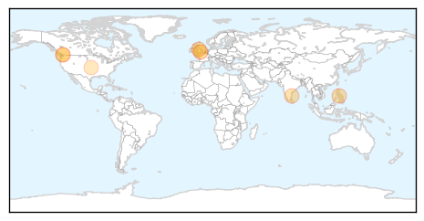
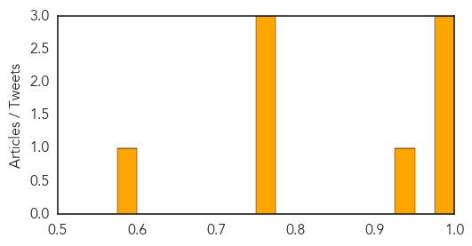
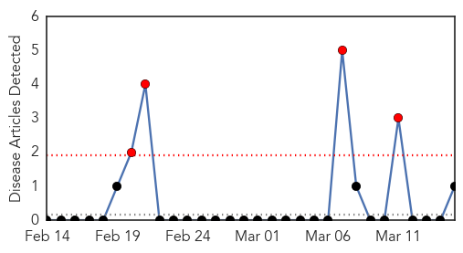

Measles
30-Day Web Trend
3 alerts, 10 warnings
30-Day Twitter Trend
0 alerts, 0 warnings

Article Locations
Article Confidences
Top Articles:
- 0.996
- Measles cases climb in California prompting public health concern
- 0.991
- Fraser Valley measles outbreak reaches Metro Vancouver campus
- 0.980
- BCIT student sick with measles from Fraser Valley outbreak
- 0.937
- Mysore sees unusual rise in chickenpox
- 0.772
- BCIT student latest infected by measles outbreak
- 0.765
- Jenny McCarthy Learns Over Twitter That A Lot Of People Want A Mate Who Is Vaccinated
- 0.758
- MLHU warning residents may have been exposed to measles
- 0.579
- St. Thomas Times-Journal
Top Tweets:
-
No tweets found for Mar 15, 2014
Mumps
30-Day Web Trend
4 alerts, 0 warnings

30-Day Twitter Trend
0 alerts, 0 warnings

Article Locations
Article Confidences

Top Articles:
Top Tweets:
-
No tweets found for Mar 15, 2014